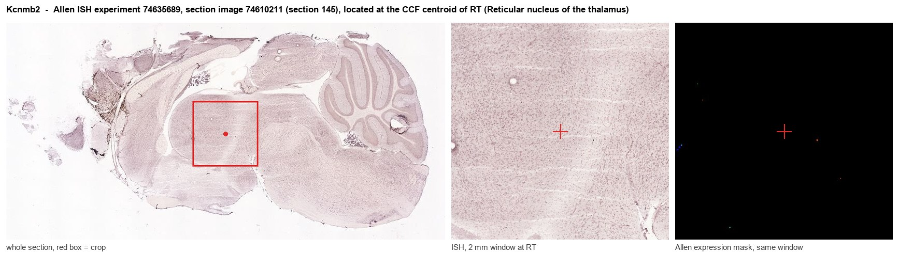
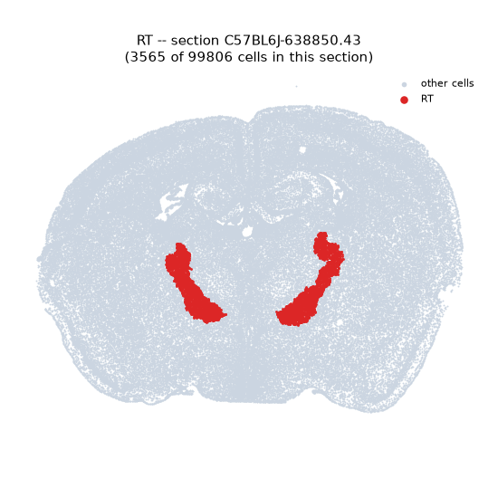
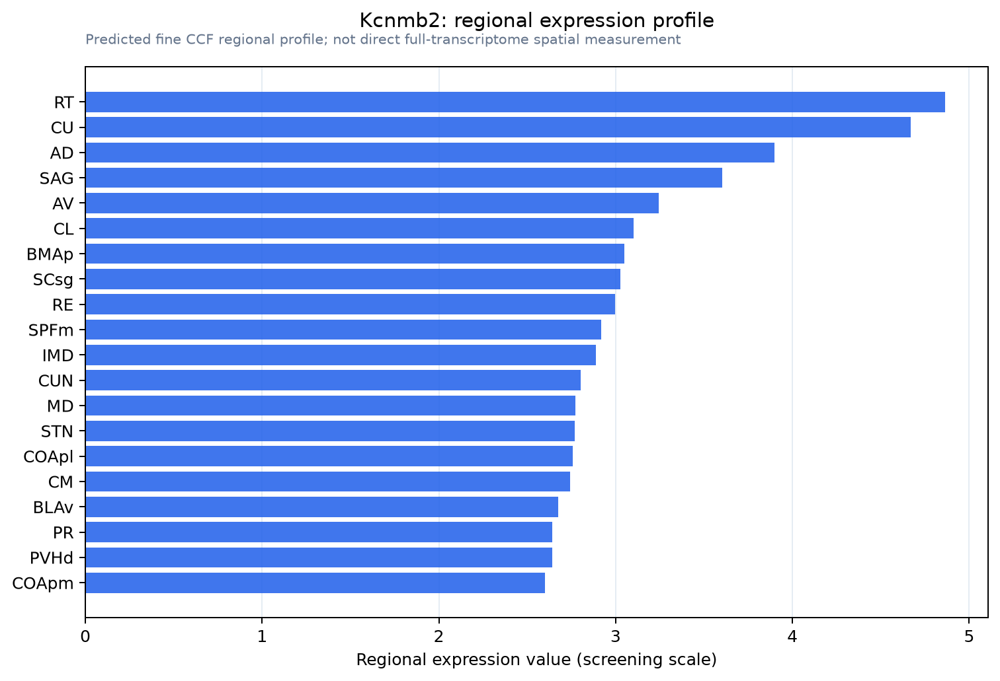

Kcnmb2
Calcium-activated potassium channel subunit beta-2 (BK channel subunit beta-2) (BKbeta2) (Calcium-activated potassium channel, subfamily M subunit beta-2) (Charybdotoxin receptor subunit beta-2) (K(VC
Spatial tier: REGION_BIASED · Class: ION_CHANNEL · Top region: RT (Reticular nucleus of the thalamus) · Positive regions: 43/554
Function in RT: evidence, prediction, innovation
- Gene function
- KCNMB2 encodes the beta-2 auxiliary subunit of the large-conductance calcium- and voltage-activated potassium (BK) channel. Its N-terminal 'ball' domain confers rapid N-type inactivation on otherwise non-inactivating BK channels, converting a sustained repolarising current into a transient one and thereby changing spike width, afterhyperpolarisation and firing frequency; it also controls BK surface trafficking.
- Region function
- The thalamic reticular nucleus is a shell of parvalbumin-rich GABAergic neurons that surrounds the thalamus and provides the main inhibitory feedback onto relay nuclei; its burst firing generates sleep spindles and it gates sensory transmission during attention.
- Published in this region
- inferred No region-specific literature found. The closest functional precedent is in another rhythm-generating nucleus: Whitt 2016 showed that beta2-mediated BK inactivation gates daytime excitability in suprachiasmatic clock neurons, and Moldenhauer 2022 characterised how an autism-associated KCNMB2 variant alters BK properties.
- Predicted function
- Prediction: in reticular thalamic neurons, whose burst firing depends on T-type calcium entry followed by calcium-activated potassium currents, a beta2 subunit that inactivates BK would prolong bursts and shape the characteristic accelerando-decelerando spike train that drives spindle waves. Deleting Kcnmb2 should convert BK current to a sustained form, shortening bursts and reducing spindle duration and density in EEG, with predicted effects on NREM sleep continuity and on sensory gating; conversely, enhancing inactivation should lengthen spindles.
- Innovation
- ★★★★★ 5/5 BK beta subunits are a precise handle on burst shape in the nucleus that generates sleep spindles, yet no study has looked at KCNMB2 in the TRN.
- Tools
- Kcnmb2 knockout mice; BK blockers paxilline, iberiotoxin and charybdotoxin and the activator NS11021; anti-BK beta2 antibodies; PV-Cre for reticular targeting.
- References
Direct evidence located at the region

Allen ISH experiment 74635689, section image 74610211 (section 145): the section that contains the CCF centroid of Reticular nucleus of the thalamus according to the Allen image-to-atlas alignment (reference_to_image), with a 2 mm window around that point. Left: whole section, red box = window. Middle: ISH signal. Right: Allen's expression-mask view of the same window. open this image in the Allen viewer
Direct spatial evidence

Regional expression figure

Predicted WMB × fine-CCF profile; not direct full-transcriptome spatial measurement.
Spatial profile
Evidence and specificity
- Evidence status
- PREDICTED_FINE
- Direct sources
- None; predicted localization only
- Exclusive threshold
- 12 positive regions out of 554
- Spatial specificity
- 0.290
- Top-region fraction
- 0.042
- Filter status
- PASS
Interpretation limits
- Cell-type-to-region projection is imputed expression, not direct spatial measurement.
- Adult reference atlases do not establish stability across age, sex, strain, state, or disease.
- Transcript abundance does not guarantee protein abundance or genetic-tool performance.